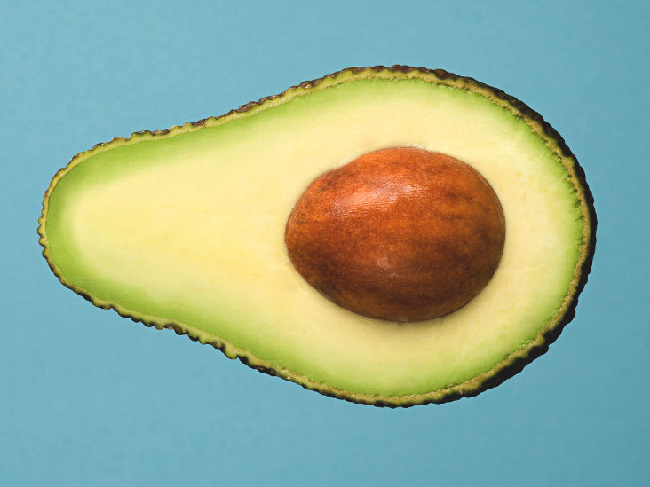

JPG
Se trata del término acuñado por Joint Photographic Experts Group, grupo de expertops que creó el . jpg,. un formato de compresión de imágenes, tanto en color como en escala de grises, con alta calidad.
PNG
A diferencia de JPG, PNG es un formato de compresión SIN pérdida. Sus siglas corresponden a Portable Network Graphics e inicialmente se creó para solventar los defectos y deficiencias del formato GIF (que veremos después). Una característica muy importante de este formato es que soporta transparencias, a diferencia de JPG que siempre tendrá un fondo de color sólido. Los PNG son el formato ideal para las imágenes sin fondo, las imágenes que contengan texto y los logotipos.

GIFT
Formato muy popular por permitir crear imágenes en movimiento. De hecho, su principal característica es que soporta animaciones, pero también soporta transparencias y paletas de 256 colores.

SVG
Imagen vectorial, lo que significa que la podemos escalar, pesa pocos megas y permite, a diferencia de los formatos estándar (mapa de bits), una definición mayor en tamaños reducidos. El formato es equivalente al que se utiliza en los populares programas como Adobe Illustrator o Corel Draw. En segundo lugar, es un estándar abierto y compatible.